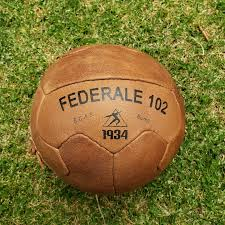
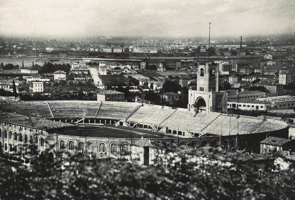
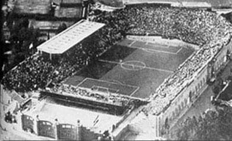
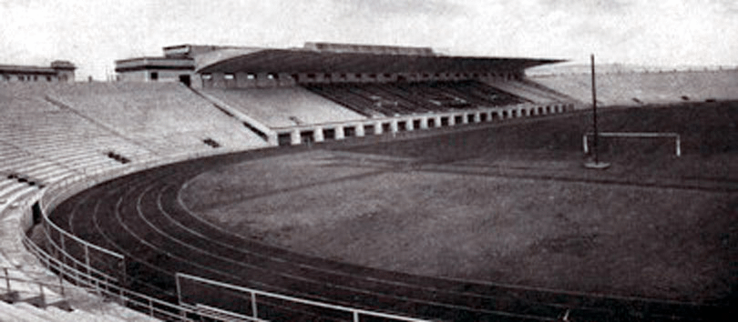
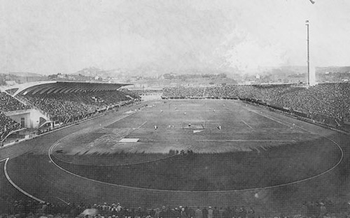
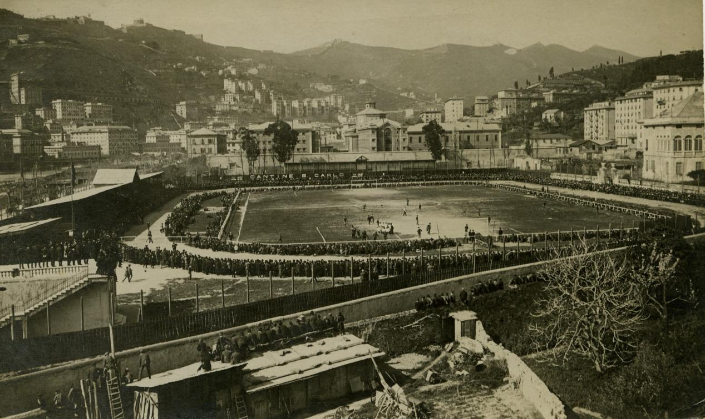
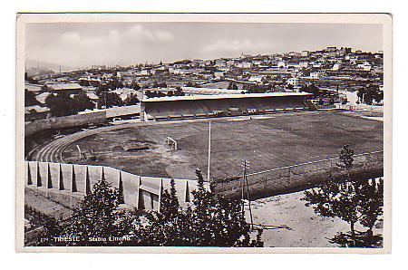
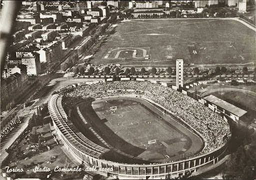
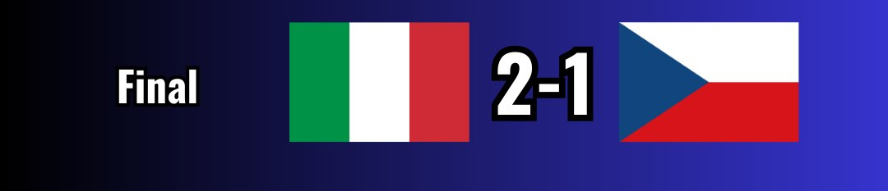

Mundial Italia 1934

Seleccion Campeona del Mundo

Poster oficial del Mundial de Italia 1934

Trofeo del Mundial de Italia 1934

Album de cromos del Mundial de Italia 1934

Balon oficial del Mundial de Italia 1934

Participantes

Estadisticas del Mundial de Italia
Estadios del Mundial de Italia 1934
Roma:Stadio Nazionale PNF

Bolonia: Stadio del Littoriale

Milán: Stadio San Siro

Nápoles: Stadio Giorgio Ascarelli

Florencia: Estadio Giovanni Berta

Génova: Stadio Luigi Ferraris

Trieste: Stadio del Littorio

Turin: Stadio Benito Mussolini/Stadio Olimpico Grande Torino
Semifinales del Mundial de Italia 1934

Final del Mundial de Italia 1934

Datos relevantes del mundial
| Fecha | Fase | Partido | Resultado | Estadio |
|---|---|---|---|---|
| 27/05/1934 | Octavos | Italia vs Estados Unidos | 7-1 | Stadio Nazionale del PNF (Roma) |
| 27/05/1934 | Octavos | España vs Brasil | 3-1 | Stadio Littorio (Trieste) |
| 27/05/1934 | Octavos | Austria vs Francia | 3-2 | Stadio Benito Mussolini (Turín) |
| 27/05/1934 | Octavos | Hungría vs Egipto | 4-2 | Stadio Giorgio Ascarelli (Nápoles) |
| 27/05/1934 | Octavos | Suiza vs Países Bajos | 3-2 | Stadio Comunale (Florencia) |
| 27/05/1934 | Octavos | Checoslovaquia vs Rumania | 2-1 | Stadio del Littorio (Génova) |
| 27/05/1934 | Octavos | Alemania vs Bélgica | 5-2 | Stadio Giovanni Berta (Florencia) |
| 27/05/1934 | Octavos | Suecia vs Argentina | 3-2 | Stadio Littorio (Trieste) |
| 31/05/1934 | Cuartos | Italia vs España | 1-1 (prórroga) | Stadio Giovanni Berta (Florencia) |
| 31/05/1934 | Cuartos | Austria vs Hungría | 2-1 | Stadio del Littorio (Génova) |
| 31/05/1934 | Cuartos | Alemania vs Suecia | 2-1 | Stadio Benito Mussolini (Turín) |
| 31/05/1934 | Cuartos | Checoslovaquia vs Suiza | 3-2 | Stadio Nazionale del PNF (Roma) |
| 01/06/1934 | Cuartos (replay) | Italia vs España | 1-0 | Stadio Giovanni Berta (Florencia) |
| 03/06/1934 | Semifinal | Italia vs Austria | 1-0 | Stadio San Siro (Milán) |
| 03/06/1934 | Semifinal | Checoslovaquia vs Alemania | 3-1 | Stadio del Littorio (Génova) |
| 07/06/1934 | Tercer Lugar | Alemania vs Austria | 3-2 | Stadio Giorgio Ascarelli (Nápoles) |
| 10/06/1934 | Final | Italia vs Checoslovaquia | 2-1 (prórroga) | Stadio Nazionale del PNF (Roma) |
| Concepto | Dato |
|---|---|
| Campeón | 🇮🇹 Italia |
| Subcampeón | 🇨🇿 Checoslovaquia |
| Tercer Lugar | 🇩🇪 Alemania |
| Cuarto Lugar | 🇦🇹 Austria |
| Partidos jugados | 17 |
| Goles totales | 70 |
| Promedio de goles por partido | 4.12 |
| Asistencia total | 363.000 espectadores |
| Promedio de asistencia | ≈ 21.353 por partido |
| Máximo Goleador | Oldřich Nejedlý (Checoslovaquia) - 5 goles |
| Selecciones participantes | 16 |
| Sede | Italia |
| Nota | Primer Mundial con fase clasificatoria |